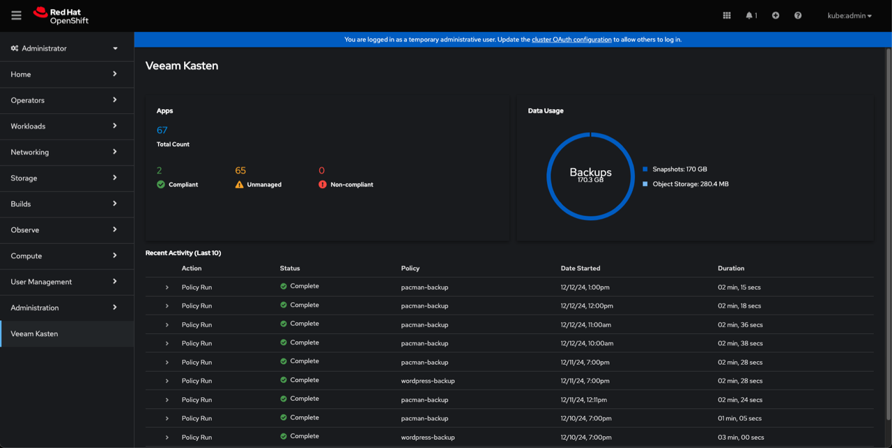
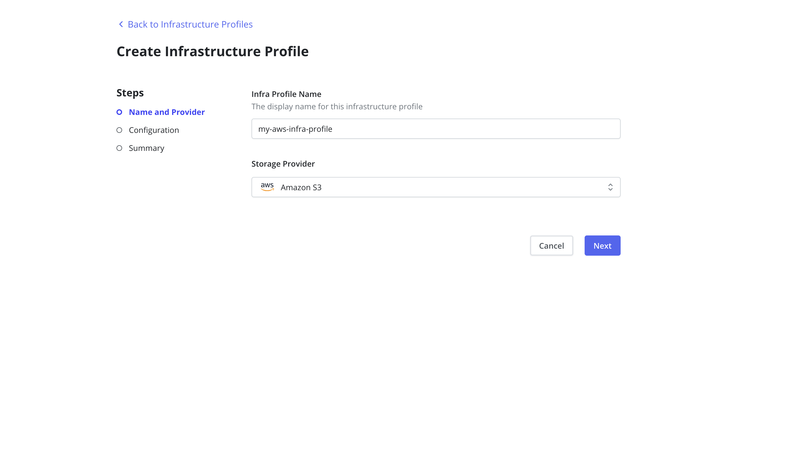
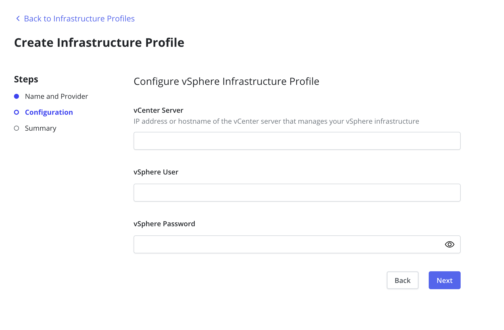

Deploying and Configuring
Veeam Kasten
Modules 01 and 02 built the map. This module is the runbook: check the environment, run the pre-flight tool, install with Helm, reach the dashboard, wire up storage, and create the first location profile so exported data has somewhere to land.
Every command on this page is quoted from the Veeam Kasten 9.0.2 documentation and cited to its page. Where a Veeam Data Platform habit carries over, the text says so.
The estimate below is reading time plus the knowledge check; executing the runbook against a live cluster is a separate booking. Time the pre-flight pass in your own environment — the deeper CSI check and the pod start-up dominate the clock (Sections 2 and 3) — and size the change window from that, not from the figure on this page.
- Modules 01 and 02 — the concept bridge and the Kubernetes terms used here without re-definition.
- Cluster access — a working
kubectlcontext with rights to create a namespace and cluster-scoped objects. - A shell — this module is command-line first. The dashboard is part of what you are deploying, so there is no GUI to reach until the platform exists.
- Image-pull reachability — the cluster nodes need a path to the container registry that holds the Veeam Kasten images, or to your own mirror of it (Section 1).
- Identify the platform, Helm, namespace, and storage prerequisites Veeam Kasten expects before an install begins.
- Run the pre-flight checks with the primer tool and interpret what its output tells you about the cluster.
- Execute a Helm-based install into the
kasten-ionamespace and verify that it succeeded. - Choose a dashboard access path and an authentication mode appropriate to how the dashboard will be exposed.
- Configure CSI storage integration by annotating a VolumeSnapshotClass, and create a first location profile.
What has to be true before you install
Four things have to be true before the install is worth attempting — platform, Helm, namespace, and storage — and each one has a command or setting that proves it. Nothing here touches the cluster yet.
You already run this checklist in Veeam Data Platform; here the answers arrive in Kubernetes vocabulary, and storage carries the most weight because the snapshot capability belongs to the storage driver, not the backup product.
Veeam Kasten's two main editions — Veeam Kasten Free and Enterprise — use the same container images and follow an identical install process. Free is the default Starter edition: no charge, for evaluation or smaller and non-production clusters, functionally the same as Enterprise but limited in support and scale. Nothing in this module changes with the edition.
1. Platform
The supported operating system is Linux, and the architecture you pick decides which capabilities are available. Read the last two rows twice: Veeam repository exports and vSphere block mode exports are the features that tie Veeam Kasten back to the estate you already run.
| Capability | Linux x86 (amd64) | Linux Arm (arm64/v8) | Linux Power (ppc64le) |
|---|---|---|---|
| FIPS support | ✓ | ✗ | ✗ |
| Veeam repository exports | ✓ | ✗ | ✗ |
| vSphere block mode exports | ✓ | ✗ | Not applicable |
Supported platforms and the capabilities each architecture carries.
2. Helm
The first prerequisite step is to verify the Helm 3 package manager and configure access to the Veeam Kasten Helm charts repository. Helm is assumed to be compatible with n-3 versions of the Kubernetes it was compiled against, so match it to the cluster's version.
helm repo add kasten https://charts.kasten.io/Helm confirms the repository was added — the chart repository, one of three network paths covered below.
The chart repository is one of three network paths an internet-connected install needs: the Helm repository that contains the Veeam Kasten chart, the container registry that contains the Veeam Kasten container images, and upstream repositories for dependencies such as Prometheus. All Veeam Kasten images for a default install are hosted at gcr.io/kasten-images.
Confirm image-pull reachability from the cluster nodes before the install window opens — a blocked registry path fails neither this step nor the install command; it surfaces later as pods that never reach Running. Where an air-gapped installation is required, it is possible to use your own private container registry; the air-gapped pre-flight command in Section 2 shows the same substitution.
The chart's integrity can be verified using the published public key: pass the --verify flag along with the --keyring when running helm install.
helm install k10 kasten/k10 --namespace=kasten-io --verify --keyring=/path/to/downloaded/RPM-KASTENHelm chart provenance is supported only in Veeam Kasten chart versions 6.5.14 and later. If the verify flags fail on an older chart, the chart version is the thing to check first.
3. Namespace
Create the installation namespace — by default, kasten-io. On install, Helm will automatically generate a new Service Account granting Veeam Kasten the required access to Kubernetes resources; a pre-existing Service Account can be used instead.
kubectl create namespace kasten-ioTreat kasten-io like the machine a Veeam Backup & Replication server runs on: the product's own home, not somewhere protected workloads live. The name is a default rather than a hard requirement, but the documentation uses kasten-io throughout — staying on it keeps every copied command working unchanged.
4. Storage
Veeam Kasten assumes that SSDs or similar fast storage media support the default storage class; if the default storage class doesn't meet the performance requirements, add the following option to the Veeam Kasten Helm installation commands.
--set global.persistence.storageClass=<storage-class-name>That flag governs where Veeam Kasten keeps its own state. The second storage question — the one that decides how good the resulting protection can be — is about the workloads you protect: using a CSI driver with VolumeSnapshot support is a requirement to build a good data protection solution using Veeam Kasten. Though Veeam Kasten supports Generic Storage Backups for storage systems with no CSI drivers, this approach is not recommended.
The three CSI requirements
- Kubernetes v1.14.0 or higher.
- The VolumeSnapshotDataSource feature has been enabled in the Kubernetes cluster.
- A CSI driver that has Volume Snapshot support.
The first two are inherited history: the baseline is Kubernetes v1.14.0 with the VolumeSnapshotDataSource feature enabled, far below anything this build supports. Check the support matrix instead — Kubernetes 1.31 to 1.34 on any certified distribution, with 1.30 and 1.29 supported only as OpenShift 4.17 or 4.16 — since a vanilla 1.30 cluster is not a supported target, however clean its pre-flight run. The third requirement is the one Section 2 proves.
One gap no pre-flight closes: the check does not include verification of the cluster being in FIPS mode, a requirement for installing Veeam Kasten in FIPS mode — that one you confirm yourself.
Platform, Helm, namespace, storage. Three are quick yes-or-no answers; the storage question — does the driver take snapshots — deserves the preparation time, because no install flag can add a capability the driver does not have.
Let the primer tool answer the storage question for you
Run the pre-flight checks, read the output line by line, and make the call: is this cluster ready for an install? The checklist at the end turns that call into something you can hold.
Validate that all prerequisites for installing Veeam Kasten are met by running the pre-flight checks. The primer tool performs them provided that your default kubectl context is pointed to the cluster you intend to install Veeam Kasten on — point it at the wrong cluster and it will faithfully report on the wrong cluster, so confirm the context first.
What the tool does
The primer runs in a cluster pod and performs three operations:
- validates if the Kubernetes settings meet the Veeam Kasten requirements,
- catalogs the available StorageClasses,
- and — if a CSI provisioner exists — performs basic validation of the cluster's CSI capabilities and any relevant objects that may be required.
It will create and subsequently clean up a ServiceAccount and ClusterRoleBinding to perform sanity checks, and it assumes the Helm 3 package manager is installed with access to the Veeam Kasten Helm Charts repository configured.
curl https://docs.kasten.io/downloads/9.0.2/tools/k10_primer.sh | bashThe documented command to deploy the pre-check tool.
To run the pre-flight checks in an air-gapped environment, use the following command instead, substituting your own registry for the example one.
curl https://docs.kasten.io/downloads/9.0.2/tools/k10_primer.sh | bash /dev/stdin -i repo.example.com/k10tools:9.0.2What a good result looks like
The documentation shows example primer output from a Kubernetes cluster deployed in Digital Ocean. Read it as four verdicts about the cluster followed by one verdict per storage provisioner. It is an old sample — Kubernetes v1.17.13, CSI group v1alpha1 — so expect your own run to name a current version and the v1 group; the shape of the output is what to take from it.
Kubernetes Version Check:
Valid kubernetes version (v1.17.13) - OK
RBAC Check:
Kubernetes RBAC is enabled - OK
Aggregated Layer Check:
The Kubernetes Aggregated Layer is enabled - OK
CSI Capabilities Check:
Using CSI GroupVersion snapshot.storage.k8s.io/v1alpha1 - OKThen, per provisioner, the tool reports the StorageClasses it found and the VolumeSnapshotClasses attached to them — the part that answers Section 1's storage question.
Volume Snapshot Classes:
csi-rbdplugin-snapclass
Has k10.kasten.io/is-snapshot-class annotation set to true - OK
Has deletionPolicy 'Retain' - OKTwo lines, two different things: the annotation line says Veeam Kasten will recognise this VolumeSnapshotClass and use it; the deletion-policy line says what happens to the underlying snapshot when the Kubernetes object is removed. Where a provisioner has no deletion policy set, the same output reports it plainly as Missing deletionPolicy, using default.
Read that last line as information, not as a finding to clear. It carries no - OK because it reports a state rather than passing a test, and the state is the acceptable one: the guide describes the default deletion policy as the default and recommended one, and the release notes record that a Retain deletionPolicy for VolumeSnapshotClasses is no longer required or recommended. The annotation line directly above it is what gates whether snapshots work at all — stop on that one if it is missing.
The deeper CSI check
The documentation strongly recommends using the same tool for a more comprehensive CSI validation — a real end-to-end rehearsal that creates a sample application with a persistent volume, writes data to it, snapshots the volume, creates a new volume from the snapshot, and validates the data in the new volume. Run the first command to derive the list of provisioners with their StorageClasses and VolumeSnapshotClasses, then the second with a valid StorageClass to deploy the pre-check tool.
curl -s https://docs.kasten.io/downloads/9.0.2/tools/k10_primer.sh | bashThen the deeper check, pointed at a StorageClass from that output:
curl -s https://docs.kasten.io/downloads/9.0.2/tools/k10_primer.sh | bash /dev/stdin csi -s ${STORAGE_CLASS}Run the deeper CSI check before your install window, not during it. It performs the round trip your first restore test would — write, snapshot, restore, read back — and the instinct is one you already have: prove the storage path works before you schedule anything against it.
One command, then two minutes of watching pods
The install itself is one command. The judgment is in the flags your platform needs alongside it — and in proving the install succeeded before you go looking for the dashboard.
helm repo add kasten https://charts.kasten.io/. You should see Helm confirm the repository. Nothing has touched the cluster yet.kubectl create namespace kasten-io. On install, Helm automatically generates a Service Account granting Veeam Kasten the required access.helm install k10 kasten/k10 --namespace=kasten-io. Depending on your underlying infrastructure, you might also need to provide access credentials as specified elsewhere for public cloud providers.kubectl get pods --namespace kasten-io --watch to watch for the status of all Veeam Kasten pods. It may take a couple of minutes for all pods to come up but all pods should ultimately display the status of Running.The install command
For a certified Kubernetes distribution installed on-premises or in another environment, follow the general instructions. Which distributions qualify is a matrix question: the supported Kubernetes and OpenShift versions are published in the guide, and versions no longer actively supported by their vendor or community are not supported.
helm install k10 kasten/k10 --namespace=kasten-ioIn a public cloud the same command carries credential flags: on Amazon EKS, or any other Kubernetes distribution running on EC2, two environment variables holding the access key id and secret access key are defined first and passed through.
helm install k10 kasten/k10 --namespace=kasten-io \
--set secrets.awsAccessKeyId="${AWS_ACCESS_KEY_ID}" \
--set secrets.awsSecretAccessKey="${AWS_SECRET_ACCESS_KEY}"Before installing on Amazon EKS, determine the preferred authentication mechanism — long-term access keys or IAM Roles for service accounts — because that choice affects the necessary steps and prerequisites.
Where “as specified elsewhere” points, platform by platform
AWS is the worked example; the other platforms have their own credential flags, each on its own install page in the guide. Find yours before the install window.
- Azure. To install on Azure with Service Principal, you need to specify Client Secret credentials including your Azure tenant, service principal client ID and service principal client secret. Azure Stack takes the same three plus resource group, subscription ID and endpoint values.
- Google Cloud. Two Service Accounts are required: a Google Cloud Platform Service Account granting access to underlying infrastructure such as storage, and a Kubernetes Service Account granting access to Kubernetes resources, auto-created during the Helm install. A newly created service account needs the
roles/compute.storageAdminrole. - On-premises vSphere. To back up volumes provisioned by the vSphere CSI driver, credentials must be provided, either via Helm parameters or using a vSphere Infrastructure Profile. Section 5 covers the profile route; the Helm route is the flag trio below.
- Red Hat OpenShift. Depending on your OpenShift infrastructure provider you might need provider credentials as above, and you also add
--set scc.create=trueto create the SecurityContextConstraints for Veeam Kasten ServiceAccounts.
helm install k10 kasten/k10 --namespace=kasten-io \
--set secrets.azureTenantId=<tenantID> \
--set secrets.azureClientId=<azureclient_id> \
--set secrets.azureClientSecret=<azureclientsecret>The documented Azure install command for a service principal.
--set secrets.vsphereUsername=<vsphere username> \
--set secrets.vspherePassword=<vsphere password> \
--set secrets.vsphereEndpoint=<vsphere ip or hostname>Setting up vSphere credentials requires configuring all of these flags during the execution of helm install or helm upgrade; alternatively an existing secret can be used with --set secrets.vsphereClientSecretName=<secret name>.
Verifying the install
To validate that Veeam Kasten has been installed properly, the following command can be run in Veeam Kasten's namespace — the install default is kasten-io — to watch for the status of all Veeam Kasten pods.
kubectl get pods --namespace kasten-io --watchThe --watch flag holds the terminal open — the command working, not hanging. Read until every pod shows Running, then press Ctrl+C. It may take a couple of minutes for all pods to come up.
What you should see, once the pods settle, is a table in which every row reads Running.
NAMESPACE NAME READY STATUS RESTARTS AGE
kasten-io aggregatedapis-svc-b45d98bb5-w54pr 1/1 Running 0 1m26s
kasten-io auth-svc-8549fc9c59-9c9fb 1/1 Running 0 1m26s
kasten-io catalog-svc-f64666fdf-5t5tv 2/2 Running 0 1m26sAn excerpt of the documented example output; a real cluster lists more services. If pods are stuck in any other state, the documentation directs you to the support documentation to debug further.
If pods do not reach Running
On an install night, the stuck status you are most likely to meet is ImagePullBackOff: Kubernetes could not pull a container image — generic Kubernetes behavior, not a Veeam Kasten fault. It almost always has one of three causes: the registry is unreachable from the cluster's nodes (common behind proxies and in air-gapped environments), the image reference or tag is wrong, or a private registry needs a pull credential the cluster was not given. Run kubectl describe on the stuck pod — the Events list at the end states which of the three it was, the fix lets the pod pull and start on its own, and the same output is exactly the evidence a support case wants.
“Go to the support documentation” is thin comfort at 21:40 in a change window, so collect the evidence before you change anything: the guide asks you to run the debug script as a first step to get information to support, assuming your default kubectl context points at the cluster and Veeam Kasten is installed in the kasten-io namespace.
curl -s https://docs.kasten.io/downloads/9.0.2/tools/k10_debug.sh | bash;The script generates a compressed archive k10_debug_logs.tar.gz with separate log files for Veeam Kasten services. Recent builds can also produce support logs from the System Information page under the Settings menu.
If you decide to remove the install and start again, remove it the documented way, in this order:
helm uninstall k10 --namespace=kasten-iofirst, notkubectl delete namespace— it is important to uninstall Veeam Kasten with the Helm command to ensure that all non-namespaced resources are cleaned up, and deleting the namespace Veeam Kasten is installed in might cause issues with stale services.- Then clean up the namespace if it survives: when reinstalling Veeam Kasten on the same cluster, it is important to clean up the namespace in which Veeam Kasten was previously installed, with
kubectl delete namespace kasten-io— the disaster-recovery workflow states the same step first. - Optionally, custom resource definitions remain after uninstalling and can be cleaned up separately — but deleting CRDs may lead to data loss, because any resources defined by the CRDs will be deleted.
The 9.0.2 guide publishes no retry procedure for a partially completed install. [VERIFY: whether a straight helm install re-run without that cleanup is safe after a failed install specifically — the 9.0.2 guide addresses reinstallation but never the failed-install case, so the cleanup sequence above is the documented path and a bare retry is not; Kasten SME to confirm.] Until that is confirmed, do not loop retries: collect the debug bundle, do the documented cleanup, and install once more — or open a support case with the logs attached.
The release name k10 becomes part of the dashboard URL: install under a different release name and the dashboard is served at the /<release-name>/ URL path instead — a decision that follows you into every URL, bookmark, and ingress path.
Reaching the dashboard, then locking it down
Get into the dashboard from your own machine first. Then the two decisions that outlive tonight: which of the four ways in other people get, and which authentication mode belongs in front of it.
By default, the Veeam Kasten dashboard will not be exposed externally — a deliberate difference from the Veeam Backup & Replication console. The first look is a tunnel you open yourself and close when you are done.
kubectl --namespace kasten-io port-forward service/gateway 8080:80To establish a connection to the dashboard, use this kubectl command to forward a local port to the Veeam Kasten ingress port. The dashboard will then be available at http://127.0.0.1:8080/k10/#/.

Unmanaged means no policy has claimed the application yet — the normal state of a cluster on day one. The next two modules move applications out of that column.
Four ways in
Following a successful installation, there are several options for setting up access to the Veeam Kasten dashboard. Pick the tab that matches how the dashboard needs to be reached.
What it is for: your own session, from your own machine, for as long as the command runs — the command and URL shown above.
If you installed with a different release name than k10, modify the URL to replace the last occurrence of k10 with that release name.
An Ingress is Kubernetes' built-in front door — a rule that routes incoming web traffic to a service inside the cluster; the Ingress controller enforces those rules, and many clusters already run one.
What it is for: a cluster that already has an Ingress controller, and a dashboard other people need to reach.
If there is already an Ingress controller installed and the goal is to expose the Veeam Kasten dashboard through it, the option --set ingress.create=true must be specified with the helm install command. By default, the Ingress object is created with the name {release-name}-ingress, and a different name can be set with --set ingress.name="<custom-name>".
An Ingress class can be chosen for the Ingress object by adding that option to the Helm command:
--set ingress.create=true --set ingress.class=nginx
Follow your specific Ingress controller's guidelines to expose an external endpoint for the k10-ingress Ingress object installed in the kasten-io namespace as part of the Helm installation.
What it is for: exposing the dashboard through an external load balancer, with a DNS name in front of it.
To expose the Veeam Kasten dashboard via an external load balancer, you will need to configure an authentication method; the currently supported options are Basic Authentication, Token Authentication, or OpenID Connect Authentication. The options can be added to the install command for your environment, or applied as an upgrade:
helm upgrade k10 kasten/k10 --namespace=kasten-io \
--reuse-values \
--set externalGateway.create=true \
--set auth.tokenAuth.enabled=trueThe dashboard will then be available at the /k10/ URL path of the DNS or IP address set up using those options. If your environment does not support ExternalDNS, find the load balancer's public DNS or IP address first:
kubectl --namespace kasten-io get service gateway-ext \
-o jsonpath='{.status.loadBalancer.ingress[].hostname}'What it is for: Red Hat OpenShift clusters, where Routes are the native way to publish a service.
The Veeam Kasten dashboard can also be accessed via an OpenShift Route. The Route is enabled from the install command with --set route.enabled=true, and TLS on that Route is a separate setting.
The authentication decision has a native answer too: the OpenShift OAuth server and OAuth proxy can be used for authenticating access, and by default Veeam Kasten automatically configures the OAuth Client during installation — extracting the Root CA certificates, creating the OAuth Client Service Account, and generating the corresponding secret.
Do not leave the dashboard behind port-forward; use an ingress with HTTPS. A forwarded port ties dashboard access to one person's laptop and one running command.
The four authentication modes you choose at install
During installation, you have an option to choose an authentication mode: Direct Access, Basic Authentication, Token-based Authentication, or OpenID Connect — and when exposing the dashboard externally, it is required that an authentication method is properly configured to secure access. Two more modes matter in an enterprise: an Active Directory or LDAP server, enabled with --set auth.ldap.enabled=true and its supporting Helm values, and on Red Hat OpenShift the OpenShift OAuth server, enabled with --set auth.openshift.enabled=true.
| Mode | How it is enabled | What to know |
|---|---|---|
| Direct Access | No authentication configuration. | No authentication method is configured, and there is no RBAC set on Veeam Kasten: any user who has access to the dashboard can perform all Veeam Kasten operations, which is not advisable if granular access is needed. Read “all operations” literally — destructive ones included, with no authenticated identity behind them. Lab-only. |
| Basic Authentication | --set auth.basicAuth.enabled=true plus generated htpasswd credentials. |
Protects the dashboard with a user name and password; when using Basic Authentication there is also no RBAC set on Veeam Kasten. |
| Token Authentication | --set auth.tokenAuth.enabled=true. |
Once the dashboard is configured you will be prompted to provide a bearer token that will be used when accessing the dashboard. |
| OpenID Connect | Configured as an authentication mode at install time. | The option to reach for when dashboard identities should come from the identity provider your organisation already runs. |
Two details are worth carrying forward. First: token-based authentication is always enabled as a secondary authentication type to let Veeam Kasten Multi-Cluster Manager components and Veeam Backup & Replication services work with Veeam Kasten. Second: Basic Authentication needs htpasswd credentials in the format of username:hashedpassword, generated using either an online tool or the htpasswd binary found on most systems, supplied with the helm install or upgrade command — the guide publishes no htpasswd invocation to copy, and the worked example below shows the string in place.
--set auth.basicAuth.enabled=true \
--set auth.basicAuth.htpasswd='example:$apr1$qrAVXu.v$Q8YVc50vtiS8KPmiyrkld0'Alternatively, an existing secret containing an htpasswd file can be referenced with --set auth.basicAuth.secretName=my-basic-auth-secret; the secret must be in the Veeam Kasten namespace, created with the key named auth and the htpasswd-generated password as the value in its data field.
For token authentication, the most common token type is a service account bearer token, which kubectl will generate for a service account with the proper permissions; generating a token with an expiration period is the recommended practice.
kubectl --namespace kasten-io create token my-kasten-sa --duration=24hThe example assumes Veeam Kasten is installed in the kasten-io namespace and the ServiceAccount is named my-kasten-sa.
Veeam Kasten Multi-Cluster Manager appeared above only as the reason token authentication stays enabled, which undersells it. It is a product surface of its own: administrators define primary-secondary relationships between their Veeam Kasten instances, primary instances provide a single entry point and dashboard for managing secondary instances, and the secondaries' actions and metrics are summarized in the primary instance. This course operates one cluster, so Modules 04 and 05 use the single-cluster dashboard — but the rollup for a leadership review is the primary instance's, not this one.
A backup console that is closed by default and must be deliberately published is a security posture, not an inconvenience. The exposure and authentication decisions are taken together at install time, and the platform's own identity system — Ingress, load balancer, OpenShift OAuth, or OpenID Connect — does the authenticating.
One annotation decides whether snapshots work
The annotation that tells Veeam Kasten which VolumeSnapshotClass to use, the exactly-one-per-provisioner rule that fails silently until snapshots do, and the reason a CSI snapshot on its own is still not a backup.
Veeam Kasten supports direct integration with public cloud storage vendors as well as CSI integration, and while most integrations are transparent, some need configuration. The storage providers that are either automatically discovered and configured within Veeam Kasten or can be configured for direct integration include Amazon Elastic Block Store, Azure Managed Disks, Google Persistent Disk, Ceph, Cinder-based providers on OpenStack, vSphere Cloud Native Storage, Portworx, and Veeam Backup.
Apart from direct storage provider integration, Veeam Kasten also supports invoking volume snapshot operations via the Container Storage Interface. This is the path most on-premises clusters take, and it needs one specific thing from you.
The annotation
For each CSI driver, ensure that a VolumeSnapshotClass has been added with the Veeam Kasten annotation k10.kasten.io/is-snapshot-class: "true". If an existing VolumeSnapshotClass cannot be modified to match, a new one can be created with the required annotation. The example below is the guide's own correctly configured Azure Disk VolumeSnapshotClass.
$ kubectl get volumesnapshotclass csi-azuredisk-vsc -o yaml
apiVersion: snapshot.storage.k8s.io/v1
deletionPolicy: Delete
driver: disk.csi.azure.com
kind: VolumeSnapshotClass
metadata:
annotations:
k10.kasten.io/is-snapshot-class: "true"
snapshot.storage.kubernetes.io/is-default-class: "true"
creationTimestamp: "2024-10-28T14:48:50Z"
generation: 1
name: csi-azuredisk-vsc
resourceVersion: "2502"
uid: 9ebec324-0f09-42fa-aace-39440b3184b6
parameters:
incremental: "true" # available values: "true", "false" ("true" by default for Azure Public Cloud, and "false" by default for Azure Stack Cloud)
networkAccessPolicy: "AllowAll"
publicNetworkAccess: "Enabled"The annotation is what matters; the API group has moved on. The guide also shows Alpha and Beta snapshot API examples, but on every Kubernetes release in this build's support matrix the group is snapshot.storage.k8s.io/v1, as shown here. The driver, name, timestamps, deletion policy and parameters belong to the sample Azure cluster — yours will differ.
Whenever Veeam Kasten detects volumes provisioned via a CSI driver, it looks for a VolumeSnapshotClass with the Veeam Kasten annotation for that driver and uses it to create snapshots; an existing VolumeSnapshotClass can be annotated in place.
kubectl annotate volumesnapshotclass ${VSC_NAME} \
k10.kasten.io/is-snapshot-class=trueVerify that only one VolumeSnapshotClass per storage provisioner has the Veeam Kasten annotation — if none or more than one has it, snapshot operations will fail. Two annotated classes looks like nothing at install time and shows up later as failed snapshots.
The check is one command. List the VolumeSnapshotClasses that carry the annotation and count the answers per provisioner.
kubectl get volumesnapshotclass -o json | \
jq '.items[] | select (.metadata.annotations["k10.kasten.io/is-snapshot-class"]=="true") | .metadata.name'As an alternative to annotating the VolumeSnapshotClass, a StorageClass can be annotated instead, and all volumes created with that StorageClass will be snapshotted by the specified VolumeSnapshotClass.
kubectl annotate storageclass ${SC_NAME} \
k10.kasten.io/volume-snapshot-class=${VSC_NAME}Two more storage details that bite later
- Cross-cluster names must match. If application migration across clusters is needed, ensure that the VolumeSnapshotClass names match between both clusters; as the VolumeSnapshotClass is also used for restoring volumes, an identical name is required.
- The snapshotter has a floor. Ensure that the csi-snapshotter container for all installed CSI drivers has a minimum version of v1.2.2 — a check to make before your first policy runs, not after one fails.
Why a snapshot is not a backup here either
What the documentation says
The habit that carries over
You already refuse to count a storage snapshot as a backup; the reasoning is the same on Kubernetes.
Lose the volume or the namespace and the snapshot goes with it; Section 6 gives the data somewhere else to live.
Veeam Kasten creates a clone of the original VolumeSnapshotClass with the DeletionPolicy set to 'Retain', so that when restoring a CSI VolumeSnapshot an independent replica is created using this cloned class to avoid accidental deletions of the underlying VolumeSnapshotContent.
Infrastructure profiles: key steps
Some storage integrations need credentials of their own, held in an infrastructure profile: to enable snapshots and restores from AWS, an Infrastructure Profile must be created from the Infrastructure page of the Profiles menu. On VMware, a configured vSphere Infrastructure Profile makes Veeam Kasten create First Class Disk snapshots of volumes via vCenter.
This walkthrough is abbreviated. The Create Infrastructure Profile wizard has three steps — Name and Provider, Configuration, and Summary — and the screens below are the ones the documentation illustrates; treat them as a shape to recognise rather than a complete click path. Under the hood the profile is a Kubernetes custom resource: the guide's API examples create an AWS Infrastructure Profile declaratively with kubectl apply, so in a GitOps-managed rollout this step does not have to stay a dashboard click-path.

![Step two of the Create Infrastructure Profile wizard, headed Configure AWS Infrastructure Profile. The Steps list shows Name and Provider completed and Configuration active. The form has empty AWS Access Key and AWS Secret fields, a toggle labelled Execute Operations Using an AWS IAM Role with the hint that it switches to an IAM role for executing cloud-related operations, and a checkbox labelled Opt-out of EBS Direct for Changed Block Tracking noting that using EBS Changed Block Tracking is more efficient but may incur additional costs. Back and Next buttons sit at the bottom right.](images/named/p0102__Installing_Veeam_Kasten_Storage_Integration_Storage_Integrat__2010x1430__032.png)
The vSphere profile, in full
For the one integration this audience already owns, here is the whole of it. A vSphere Infrastructure Profile must be created from the Infrastructure page of the Profiles menu to identify the vCenter server; the vCenter Server field must be a valid IP address or hostname, and the vSphere User and vSphere Password fields are also required. Note the precedence: if vSphere credentials are provided during the installation of Veeam Kasten, those parameters will be ignored in favor of the credentials contained in the Infrastructure profile — the profile wins over the Section 3 install flags, so a changed account does not mean redoing the install.
On the vCenter side, it is recommended that a dedicated user account be created for Veeam Kasten, and to authorize the account a role is created with the following privileges for vSphere 7.0.x and 8.0.x:
- Datastore — Allocate space, Browse datastore, Low level file operations.
- Global — Disable methods, Enable methods, Licenses.
- Virtual Machine Snapshot Management — Create snapshot, Remove snapshot, Revert to snapshot.
- Cryptographic operations (vSphere 8.0) — Decrypt.
- vSphere with Tanzu clusters require one more privilege to resolve paravirtualized volume handles: CNS → Searchable.
Assign that role to the dedicated Veeam Kasten user account on the root vCenter object and on the datacenter objects, propagating down each subtree to reach datastore and virtual machine objects. This is the request you send your vSphere team, close enough to a Veeam Backup & Replication service-account request that you can reuse the conversation.

The repository-shaped object, and where to point it
Why a location profile exists, what you can point it at, and creating your first one — including a Veeam repository profile if your existing estate is where this data should go.
In many environments Veeam Kasten can invoke snapshots within a cluster without additional credentials, but that is not sufficient for essential operations such as real backups, cross-cluster and cross-cloud application migration, and disaster recovery of the Veeam Kasten system itself. For those actions, Veeam Kasten needs access to external object storage or external NFS/SMB file storage, accomplished via the creation of Location Profiles.
Module 01 named this object the repository-equivalent, with one correction: a location profile is a place plus the credentials to reach it — retention and scheduling live in the policy instead, which Module 05 covers.
Location Profile creation is accessed from the Location page of the Profiles menu, or via the CRD-based Profiles API; to create one, click Create New Profile on the profiles page.
Before you click that button, check the path. The guide's disaster-recovery guidance states plainly that clusters must have network connectivity to at least one external storage location, with a corresponding location profile configured to allow access to it. Upon clicking Submit the dialog will validate the input data — a firewalled endpoint or unresolvable DNS name reaches you as a failed validation on the profile card, so confirming reachability from the cluster first turns a puzzling red badge into a five-minute check already done.
What you can point it at
| Destination | What you provide | Notes |
|---|---|---|
| Amazon S3 or S3 Compatible Storage | Access key and secret, region, bucket name. | The bucket must be in the region specified; an IAM role may be specified by selecting the Execute Operations Using an AWS IAM Role button. |
| Azure Storage | An Azure Storage Account, a Cloud Environment and a Container. | The Container must be created beforehand. |
| Google Cloud Storage | Credentials for the Google Cloud storage location. | One of the four supported object storage providers. |
| Veeam Data Cloud Vault | A storage vault assigned to the registered cluster. | Select Create New Profile and choose the VDC Vault provider type; the dialog will validate the input data. |
| Veeam Repository | The DNS name or IP address of the Veeam backup server, the API port, and a backup repository name, plus access credentials in the Username and Password fields. | May be used as the destination for both application metadata and persistent volume snapshot data in compatible environments. |
Veeam Kasten creates Kopia repositories in object store locations, using Kopia as a data mover, which implicitly provides support to deduplicate, encrypt and compress data at rest, and it performs periodic maintenance on these repositories to recover released storage. That trio is what a Veeam Backup & Replication backup file already gives you — Kopia does the work here instead of the backup server. If an S3-compatible system not hosted by a supported cloud provider is used, an S3 endpoint URL must be specified and SSL verification can optionally be disabled — recommended only for test setups.
Immutability is a toggle, and it belongs on by default. If the bucket has object locking enabled, set the Enable Immutable Backups toggle: in a locked bucket, restore point data cannot be deleted or modified within the set protection period, even with administrator privileges, so a clean copy survives an attacker who has obtained privileged object store credentials.
The generic storage and shareable volume backup and restore workflows are not compatible with these protections — the protection period is ignored, the profile is treated as non-immutable, and an object-locking bucket can amplify storage usage without any additional benefit. Any volume on those workflows needs a written exception before anyone claims “all backups are immutable.”
Treat the toggle as the standing choice for every production export profile.
If the bucket is using S3 Intelligent-Tiering, only the Standard-IA, One Zone-IA and Glacier Instant Retrieval storage classes are supported by Veeam Kasten. Worth checking against the lifecycle rules already on a bucket someone else created.
Pointing it at a Veeam repository
This is the profile that connects the two halves of your estate. Select Create New Profile and specify Veeam Repository as the provider type; provide the DNS name or IP address of the Veeam backup server in the Veeam Backup Server field, the API port (pre-configured with the installation default), and the name of a backup repository on that server in the Backup Repository field.
Provide access credentials in the Username and Password fields, and ensure Access Permissions are granted within Veeam Backup & Replication for the specified account, or the related security group, and for the backup repository. Treat that as a pre-implementation task on the Veeam Data Platform side: the account exists, scoped to the one repository this profile names, before anyone opens the dialog.
On submit, the dialog validates the input, and communication with the server uses SSL and requires that the server's certificate be trusted by Veeam Kasten — an untrusted or self-signed certificate is a failure mode you can predict rather than discover. Enabling the Skip certificate chain and hostname verification option disables certificate validation: available, and not the answer you want in production.
Five things to know before you choose this route
- Exporting to a Veeam Repository requires the use of the Block Mode Export mechanism for all volume snapshots created by the policy, and when a Veeam Repository is selected as the Export Location Profile, block mode export is enabled automatically. The go/no-go gate on the whole route: both Filesystem and Block persistent volume modes are supported, but only storage provisioners capable of performing block mode exports are compatible — a property of the CSI driver, not something a Helm flag can add.
- Veeam Kasten does not support export to Veeam Backup & Replication direct object storage repository types.
- Each Veeam Kasten instance may only export to a single, unique Veeam Backup & Replication backup server; multiple location profiles may be created to export to separate repositories exposed by the same backup server, and multiple Veeam Kasten instances may be integrated with the same backup server.
- In order to properly restore volume data, the name of the Veeam Repository location profile on both the source and target cluster must be identical.
- Your CSI driver decides how expensive each export is. Veeam Kasten accelerates incremental backups to Veeam Backup & Replication for Azure Disk CSI (
disk.csi.azure.com), CephRBD CSI (rbd.csi.ceph.com) and VMware vSphere CSI (csi.vsphere.vmware.com); where that storage integration is unavailable, each export reads the entire source volume, and only the changes are sent to Veeam Backup & Replication.
What you should see when it works
When a location profile is created, the config profile will be created and a profile appears on the profiles page — provider, name, validation status, and available actions.
![A created profile card in Veeam Kasten. The header reads AZURE above the profile name federated-azure-profile, with a green Success badge on the right. Below it, a Subscription ID beginning 899abe23-34ce and a blurred Resource Group, then Credential Type set to Federated Identity. A read-only command box shows kubectl get profile federated-azure-profile -n kasten-i, truncated, with a copy button. An information panel states that the profile is using Federated Identity, is read-only and cannot be edited or deleted. A footer offers Revalidate and YAML actions.](images/named/p0102__Installing_Veeam_Kasten_Storage_Integration_Storage_Integrat__948x1024__036.png)
A checked cluster, a verified install, a secured dashboard, annotated storage, and a destination for exported data: everything after this is policy, upkeep, and recovery. Snapshots keep data on the cluster's storage; a location profile is what lets data leave the cluster — which is also what makes cross-cluster restores, migration, and disaster recovery of Veeam Kasten itself possible. Create one before you build your first policy in Module 05, not after.
Check your understanding
Five questions on the deployment runbook you have worked through. Every answer is somewhere above this line.
What you covered
A cluster checked, a product installed, a dashboard reached and secured, storage wired up, and a destination for exported data. Module 04 takes the deployment you now have and keeps it healthy.
kasten-io namespace, and verifying it by watching every pod reach Running.